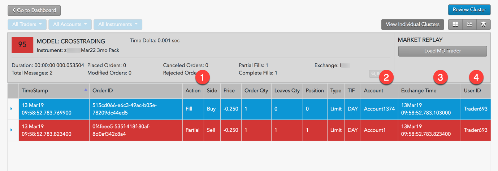

A cross trade occurs when a buy order and a sell order for the same instrument are entered for different accounts under the same management, such as a broker or portfolio manager. To ensure that all market participants have a fair chance to trade at a price, exchanges impose minimum delays between such transactions. A cross trade is potentially illegal when both sides of the trade occur within the delay period.
Note: The “resting period” (delay period) for Cross Trades is 5 seconds.
TT Score identifies opposing buy and sell orders placed for the same instrument at the same price. When it finds a matching set of orders, TT Score determines the length of time between the orders.
TT Score assigns the following risk scores for cross trades:
The Cluster Scorecard shows activity that could indicate a cross trade. Use this scorecard to get a closer look at the activity that triggered the cross trading score. The following image shows results from inspecting a cross trading cluster.

When reviewing Audit Activity for cross trading, check if: